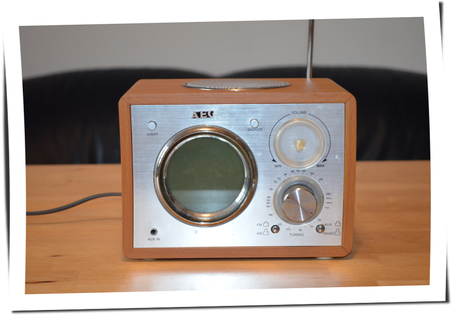
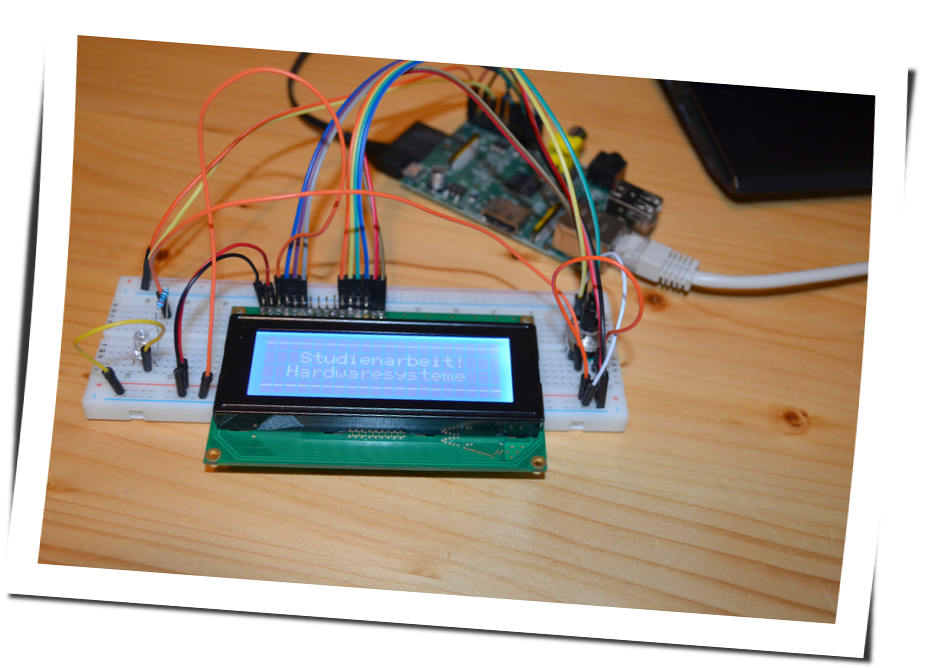
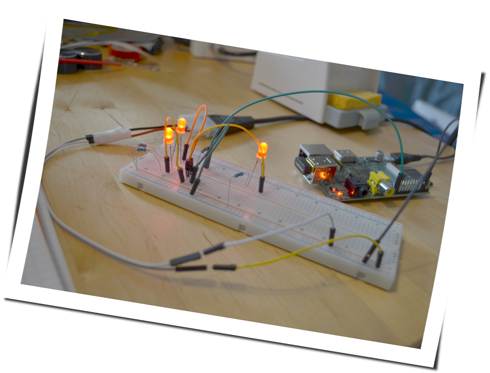
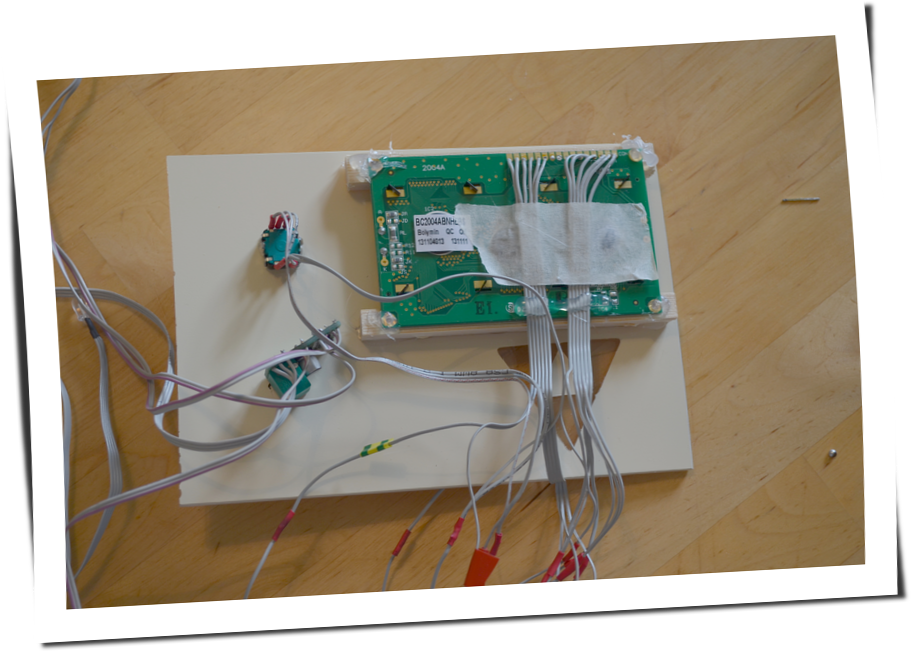
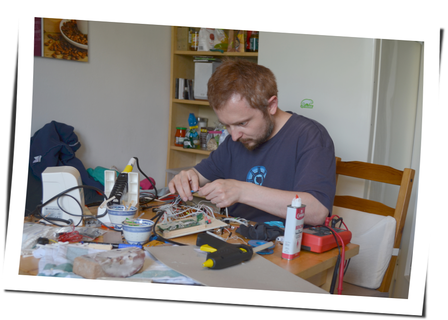

Projekt: Eulenfunk

Diese Praesentation...
gibt eine Übersicht über:
- Unsere Wohngemeinschaft in Augsburg.
- Unser Open-Source-Project namens Eulenfunk.
- Den Weg vom Schrott zum Radio.
- Überblick über Vorbereitungen, Entwicklung und Testphase
- Probleme während der Umsetzung.
...und soll Lust auf mehr machen!
- Leben in einer WG zusammen
- Alte Musikanlage erklaeren
- Herausforderung für nicht-technischen Informatiker
- Anforderungen: Nutzung vorhandener Hardware
- Preis/Leistung
- Moodbar (faszniniert von LEDs)
- Erweiterbar
Dieses Eulenfunk...
...ist entstanden weil:
- Aktuelle Musik-Situation... war kompliziert.
- Wir etwas für den täglichen Gebrauch bauen wollten.
- Alte Hardware vorhanden war.
...ist anders weil:
- Es kein Nachbau ist.
- Eigene Anforderungen umgesetzt wurden.
- Diamanten nur unter Druck entstehen.
Bilder sagen manchmal mehr als...

- Geschichte vom alten Radio (es war einmal)
Altes Analogradio:
- Komponenten kurz ansprechen
- Preis/Leistungsverhaeltnis
Some assembly required:

- LCD Spannung und Anschluesse
- Arduino Breadboard/Baukasten
- Langsames Herantasten an Hardware
Testaufbau der Basiskomponenten
- Testaufbau Transistorschaltung.
- Externes 5V Netzteil
- PNP/NPN Problem
Testaufbau zur Ansteuerung der LEDs
- Von ira-kunststoffe und lackieren erzaehlen
- Stundelange Diskussion welches Logo
- Eigentlich ein Triforce...
- ...aber jetzt ist es Neon Demon.
Lackierung

- Drehimpulsgeber
- Befestigung von Holzstuecken von Hand mit Messer zugeschnitten
- Viel Heiskleber
- Audioverstaerker
- Chirugische Praezision
- Triforce-Dimming Blende mit kuechenmesser zugeschnitten
Vorderseite von hinten
Chirugische Praezision...
- Eine Woche kuechenchaos...
- Viel loetarbeiten und trial & error
- Parallel beginn der Softwareentwicklung
Informatiker bei der Arbeit...
Finaler Prototyp #1
- Hoffentlich koennt ihr das lied nicht erkennen :)

Finaler Prototyp #2
- Hoffentlich koennt ihr das lied nicht erkennen :)

Die Hardware

Moodbar
- Bilderraetsel (Jeopardy)
- Moodbar utility: 1000 samples pro file.
- Vorberechnet, da ärmliche Performance.
- Frequenzen.

Die Software
- Ich bin Schuld an der Software.
- Hat dann doch mehr als 2 Wochen gedauert
- Sehr modular
- Playlisten von USB--Sticks

- Europaeische Variante des LCD.
- Keine Encoding Tabelle gefunden, daher Abbildung
- Mapping von unicode
- in muehevoller Handarbeit erstellt
Enkodierung

Bedienung
- Minimales Bedienkonzept ähnlich Autoradio.

Demonstration
- Vorher einschalten und auf If you have Ghosts gehen
- Pause und Schuhu spielen.
Probleme...
- Probleme mit Netzteilen erlaeutern
- Backfeed problem erklaeren
- schwache hardware fuer visuelle Effekte
- Go war gut, trotz fehlender Libraries.
- Bedienkonzept gut, trotz Skepsis von Elch.
- Nur wenige Hardware Pins mit PWMs.
- Strom/Spannungsversorgungsprobleme.
- Prinzipiell schwache Hardware.
...und was gut ging:
- Go ist nett.
- Kein Hausbrand ausgelöst.
- Bedienungskonzept passt.

Schuhu (Ende)
- Sehr eng im Gehäuse, Hitze.
- Softwareplus: Wettervorhersage, automount stabil, bootzeit.
- Design verschönern, labels für drehknöpfe, logo
- in memory alpine
Prototyp ist noch verbesserungswürdig:
- Netzteil/USB-Hub.
- Entstörung div. Komponenten.
- Komponenten »besser« im Gehäuse unterbringen.
- Design verschönern? Logo?
- Softwareoptimierungen.
- Alpine Linux?
Wir haben:
- Spaß gehabt.
- Alte Hardware nutzbar gemacht.
- Viel gelernt (Pi-Probleme, Hardware...).
- Ein neues Küchenradio.
none
FRAGEN?
Lust bekommen...
Dokumentation & Quellen:
(Noch Fragen?)